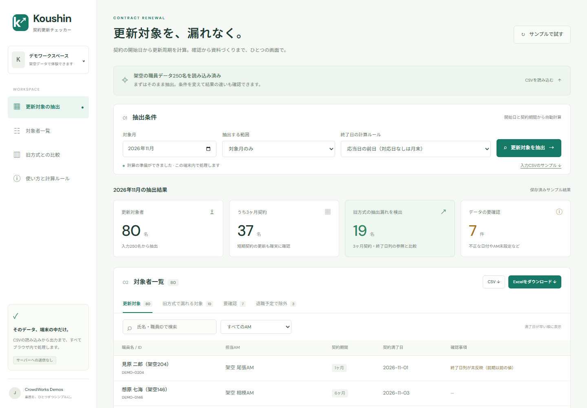

開始日から、更新日を計算。
1・3・6・12か月契約に対応。月末・うるう年も考慮し、当月から2か月先まで対象を確認できます。
終了日列への依存を減らす毎月の契約確認を、もっとシンプルに
「この人、更新対象だった？」を減らす。
対象者の抽出から、担当者別の確認資料まで。
Koushinが、毎月の確認を支えます。
✓ ログイン不要✓ サンプル付き✓ ブラウザで完結
開始日から計算して、見落としを確認。
架空職員250名・2026年11月のサンプル抽出結果
TRY IT, SEE IT.
業務デモとして公開中
THE PROBLEM
終了日列が更新されていない。短期契約の更新が、一覧から抜けている。毎月の目視確認だけでは、気づきにくい見落としがあります。
Koushinは契約開始日と契約月数から更新日を算出。終了日列に頼る従来の抽出と比較して、確認が必要な人を見つけます。
3か月契約の抽出結果を比較
旧方式で抜けていた
更新対象を検出
架空データ250名・2026年11月での比較。実際の業務での検出数や効果を保証するものではありません。
WHAT KOUSHIN DOES
計算・チェック・資料づくり。
毎月の作業を、ひとつの画面で。
1・3・6・12か月契約に対応。月末・うるう年も考慮し、当月から2か月先まで対象を確認できます。
終了日列への依存を減らす日付の不備、職員IDの重複、担当者の未設定を可視化。検索と絞り込みで、担当する職員を確認できます。
見落としと入力不備を可視化担当者別のExcel、対象一覧のCSV、確認依頼文をまとめたZIPを出力。抽出後の資料づくりまで支えます。
Excel · CSV · 依頼文ZIPA CLEARER VIEW

実際のデモ画面。表示しているデータはすべて架空のサンプルです。
THREE SIMPLE STEPS
CSVを読み込み、対象月と抽出ルールを設定。サンプルなら、ファイルの準備も不要です。
更新対象・旧方式の見落とし・入力不備を確認。担当者や契約期間で絞り込めます。
Excel・CSV・依頼文を出力。担当者への確認や、その後の業務に活用できます。
LOCAL PROCESSING
契約データの処理はブラウザ内で行います。読み込んだCSVをサーバーに送信・保存することはありません。
初回は実行環境のダウンロードに通信が必要です。入力内容は保存されず、画面を閉じると失われます。必要な結果はダウンロードしてください。
FAQ
はい。ログイン不要で、250名分の架空サンプルを使って、抽出からダウンロードまで体験できます。
UTF-8またはShift_JISのCSVに対応しています。上限は2MB・5,000行です。職員ID、氏名、契約開始日、契約月数、在籍状況などの列が必要です。デモ内のサンプルCSVで形式を確認できます。
1・3・6・12か月の固定契約期間に対応し、抽出ルールは3種類から選べます。契約途中の期間変更、再雇用、異動履歴の管理には対応していません。
本サイトは業務改善のデモです。実務での使用前に、組織の契約ルールや原本との一致を確認してください。出力は確認業務を支える参考資料です。メールの自動送信機能はありません。